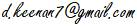

Updated April 2020.
Sad news: Our friend George Secor, who gave us the gift of Sagittal notation, passed away on the 2nd of March 2020, aged 76, after a long battle with cancer.
We have a beautiful new Sagittal SMuFL Character Map thanks to volunteer Douglas Blumeyer. Download the Excel or LibreOffice version below.
Play George Secor's
2009 piece Coming on Clouds
It's in a 16-tone subset of his 29-tone high-tolerance temperament, a 13-limit temperament
he devised in 1975.
Preface
The word
"sagittal" (pronounced "SAJ-i-tl" /ˈsædʒ ɪ təl/) means
"arrow-like". Think of Sagittarius the archer; the centaur with bow
and arrow that the ancients saw in the night sky.
The
Sagittal notation system is a comprehensive system for notating musical pitch
in all possible scales and tunings - a universal set of microtonal accidentals,
equally suited to extended just intonation, equal divisions of the octave (or
of any other interval), or any of the non-just non-equal "middle
path" tunings or temperaments. It is called Sagittal because, you guessed
it, it uses various arrow-like symbols, pointing up or down to indicate raising
or lowering of pitch.
Sagittal
was developed by George Secor and myself, with a
major early contribution from Gene Ward Smith, and in cooperation with many
others on the Yahoo Groups tuning and tuning-math.
At some
stage during the development of the notation, I suggested to George that we
should provide an entertaining introduction by means of some mythology.
George readily
agreed to write this mythology, with the help of his daughter Samara, and it
appears below for your enjoyment.
Dave
Keenan, 2-Jul-2004

Read
a mythical introduction to the Sagittal
notation.
Or
read the Xenharmonikôn article
(pdf) introducing the Sagittal notation.
Register
with the Sagittal forum for news,
support and discussion.
In
cooperation with Steinberg and the W3C's SMuFL (Standard Music Font Layout) initiative, we have
devised a font mapping for Sagittal, that makes it easier to find the more
common symbols. View the Sagittal-
SMuFL Character Map online as a PDF, or download it
as a spreadsheet in either Excel or LibreOffice format.
You must install the Bravura Text SC font
before the spreadsheets will display the correct symbols. The character
map tabulates an enormous amount of information about the complete set of
Sagittal and Sagittal-compatible accidentals. Many thanks to Douglas Blumeyer for all his hard work in compiling and presenting
this information.
The
Sagittal symbols are now part of Steinberg's free Bravura and Bravura Text fonts.
For
those of you who prefer mixed Sagittal but are frustrated by the limitations of
current notation software when it comes to compound accidentals, we have
created the BravuraMSS font. MSS stands for Mixed Spartan
Sagittal. This is version 1.18 of the Bravura font with the multi-shaft Spartan
Sagittal accidentals replaced by the corresponding mixed-Sagittal combination
of accidentals, as single characters. And they have also been mapped to all the
letters of the alphabet, lower and upper case. The natural is mapped to zero.
See
the Sagittal notation on the staff as you hear the chords played, in Andrew Meronek's Sagittal
chord list videos.
Here's
a chart showing the accidentals for the various precision levels of Single-Sagittal Just Intonation notation. Please note
that the lower two levels are considered sufficient for most mortals. And note
that the Olympian level is out-of-date. It needs to be updated to use breves on the left instead of accents on the right. You can
also read about the Prime
Factor Sagittal Just Intonation notation.
{kind=link}
Here's a
calculator in spreadsheet form
for JI Notation. Simply enter your pitch as a prime exponent vector or ratio and find
your accidental, whether in mixed or pure, at every precision level, in both ASCII and
Unicode, with all possible nominals included. Contained herein is a list of all valid
Sagittal symbols, commas, and the boundaries of their capture zones, should you want
to explore such things.
Here are links to some
configuration files used for Sagittal notation in Scala. They're formatted for Scala to read,
not humans, but there's actually some info in these which can't be readily found elsewhere for the time being:
EDO notations,
Medium precision level JI notation,
High precision level JI notation,
Ultra precision level JI notation,
Extreme precision level JI notation,
12-Relative (Trojan) notation,
high-tolerance temperament notation, and
(Some symbol descriptions).
Read
about Sagispeak, a tuning independent, and language
independent, way of naming and pronouncing the Sagittal symbols.
You
can hear the notation example from the top of this
page played in various tunings. At this stage they are in MIDI files so the
tuning accuracy and timbre is dependent on JavaScript MIDI playback.
Graham
Breed has done some brilliant work to let you use Sagittal in Lilypond.
Visit his website to
learn how.
Download
Jacob Barton's amazing Sagibelius 2.0 scripts
that let you use Sagittal symbols with the Sibelius music notation software. It
wasn't easy, but he found a way. The zipfile includes
a modified version of the Sagittal-2 font. The documentation and examples will
be educational even if you're not using Sibelius.
See
how Prent Rodgers has used Sagittal to notate the 15-limit tonality diamond.
While
the Bravura font can be used with
notation software such as Dorico, Sibelius, Finale or
Lilypond, just like any other notation font, the
following software products provide explicit support for the Sagittal system.
What the sagittal symbols really
represent. This will be of interest to anyone implementing software to play
sagittal notations.
Keenan and Secor
Honored (cached copy). It seems the gods have been having a bit of fun with
us. Apparently we have been honored already! Although what kind of honor it is,
when Keenan is described as "offensive" and Secor
as "a rookie", I'm not sure. Not to mention that they got our first
names wrong, and those photos don't really do us justice. Thanks to Aaron Hunt
for bringing this extraordinary "coincidence" to our attention.
{kind=link}